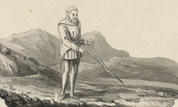
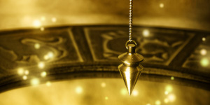
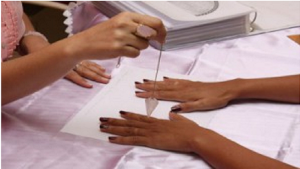

Radiestesia
Quando surgiu a Radiestesia ?
Embora o documentro considerado mais antigo sobre a Radiestesia seja do século 23 a.c., essa arte já éra conhecida em tempos mais remotos; os primeiros registros da Radiestesia podem ser encontrados em inscrições rupestres datadas de 9.000 a.c. no Peru.
A Bíblia faz alusões ao uso de varetas, chamadas pelos hebreus de "vara de Jacó". No Egito, pêndulos e varinhas foram encontrados nas escavações realizadas nas tumbas do Vale dos Reis. Temos registros dessa prática com os hindus, persas, etruscos, polinésios, gregos e gauleses.
O que é Radiestesia
A radiestesia é uma ciência que tem como objetivo medir e detectar campos energéticos através de alguns instrumentos, podem-se usar varas, pêndulos, aurameter, dual-road etc. O pêndulo é talvez o mais comum dos instrumentos e é formado por uma ponteira de cristal, madeira ou metal suspenso por um fio.
Essa capacidade de medição de energia se dá de forma suprasensorial. A radiestesia é sensibilidade, é percepção, o seu termo vem do latim, radius = radiação do grego aeshtesis = sensibilidade, com a radiestesia podemos medir energia externas e internas, assim como equilibrar e harmonizar situações e indivíduos.
Como funciona a Radiestesia
A Radiestesia funciona na forma de captação da energia cósmica (também chamada Prana, Ki, Chi etc.), que é a energia de vida universal que banha nosso planeta. Ela penetra no ápice da nossa cabeça, pelo chakra coronário, e se distribui pelos chakras restantes do corpo humano.
Ela avalia as vibrações energéticas de pessoas, ambientes, animais e objetos. Tudo pode ser analisado. Se está num local harmônico, se há doença, se há desequilíbrio, se há acúmulos, etc.